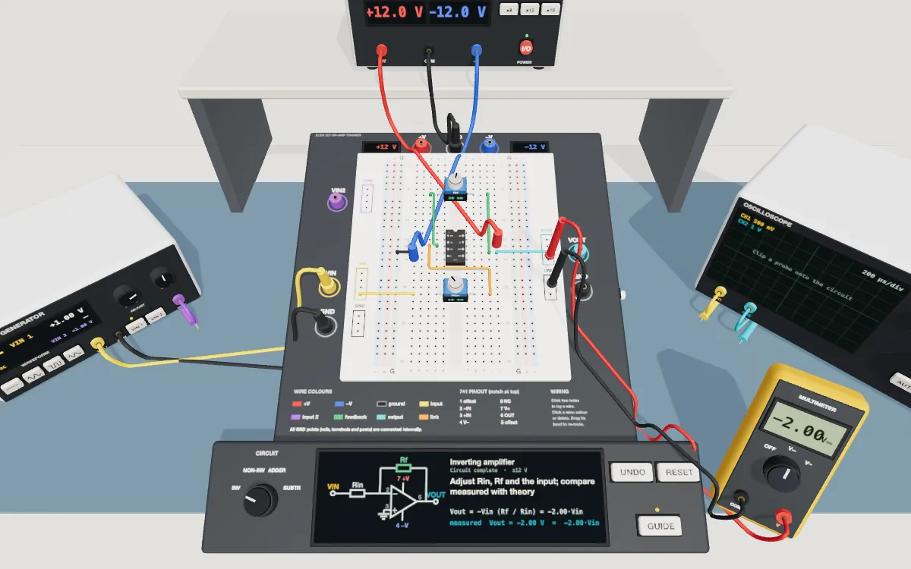
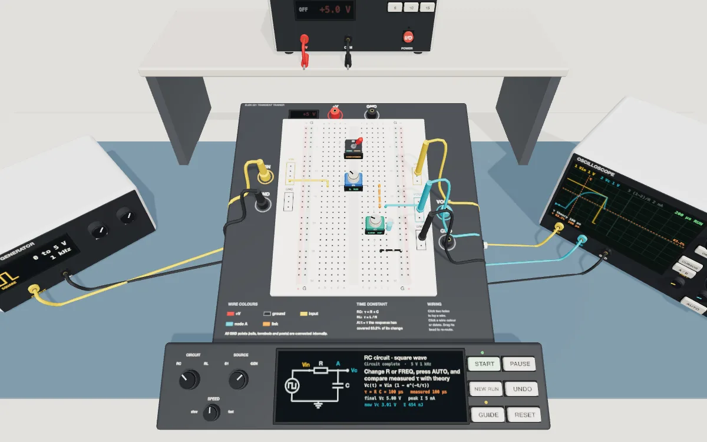

Electrical Circuits I
Choose a lab
Each lab is a standing bench with a breadboard trainer and its instruments. Wire the circuit hole to hole, power it, and measure it, on desktop or in a VR headset.

Lab 07 Operational amplifiers Wire a 741 as an inverting, non-inverting, summing or difference amplifier, and measure its output with the multimeter on DC inputs. Open Lab 07 →
Lab 08 RC and RL transient response Charge and discharge RC and RL circuits with S1 or a square wave, and measure the time constant on the oscilloscope with its cursors. Open Lab 08 →For VR, open a lab in a WebXR headset browser and select Enter VR. For a class, the instructor opens a lab and presses Class to start one; students press Class and type its code before entering VR.